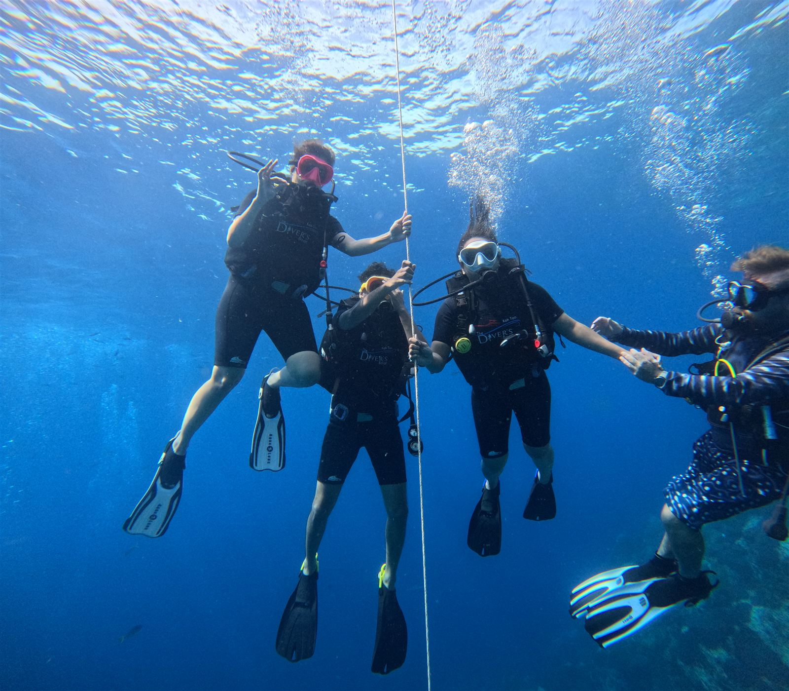
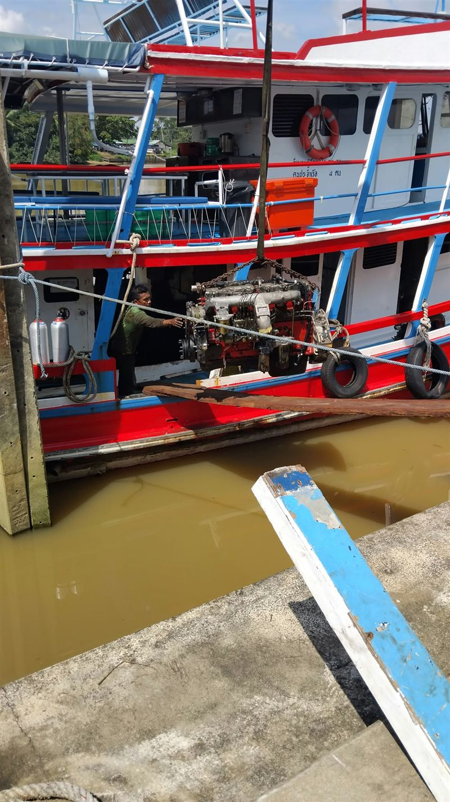
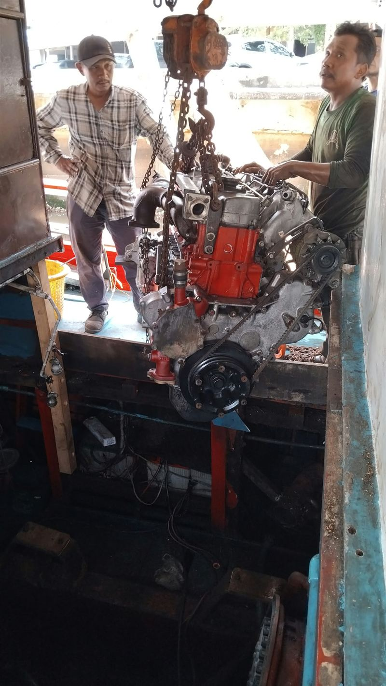
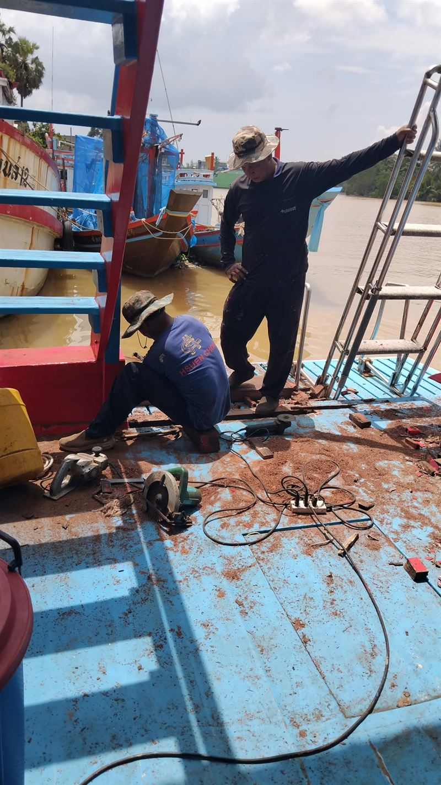
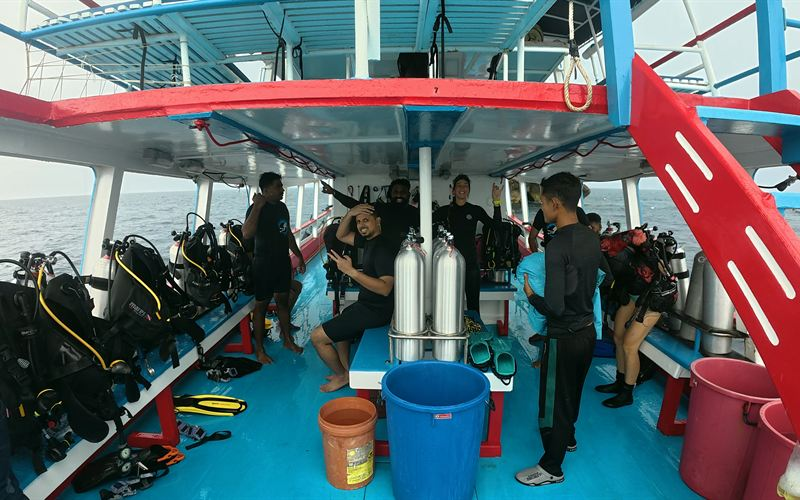
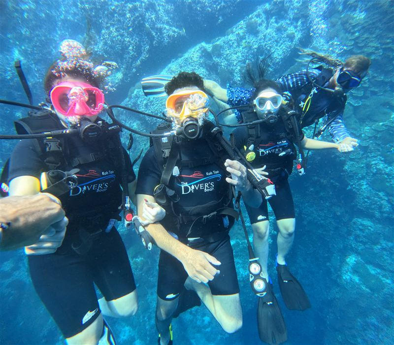
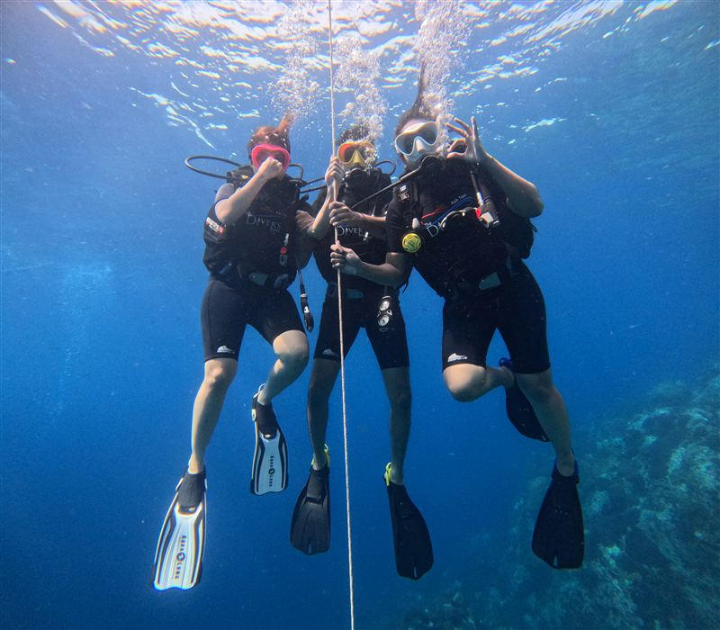

Start / Blog / Tauchbericht, Oktober 2026
Tauchbericht:
Oktober 2026
Ein rauer September, ein Oktober mit einer der besten Sichtweiten des Jahres bis zum Vollmond und den ersten Regenfällen, ein Paar Feilenfische, das Sail Rock nicht verlassen will, und unser Boot zurück aus der Werft mit neuem Motor. So sahen die letzten Wochen aus.
Von Boris Collado, leitender Instructor · · aktualisiert
Das Meer
Von Dünung
zu glattem Wasser
- September
- Mehr Dünung
- Mitte Oktober
- Perfekte Sicht
- Ab 26. Oktober
- Regen, trüber
Diese Wochen waren etwas ungewöhnlich. Der September brachte mehr Dünung als erwartet, deshalb war die Fahrt an manchen Tagen holpriger als sonst.
Der Oktober hat das Blatt gewendet. In der ersten Woche war die Sicht nur mittelmäßig, danach aber perfekt, mit glatter See auf der Hinfahrt.
Der Vollmond am 26. Oktober hat das Wasser aufgewühlt, und seitdem hatte es keine Zeit, sich zu klären: Die Regenfälle sind gekommen, und Wind und Strömung drehen. Aus dem Westen, wie seit Mai, bringen sie uns das klarste Wasser. Jetzt drehen sie auf Ost, was trüberes Wasser bringt, und so bleibt es meist bis Mai. Das Wasser ist noch warm und Sail Rock noch voller Leben, aber rechne mit weniger Sicht als im Oktober.

Schrift-Feilenfisch · Sail Rock
An Sail Rock
Ein Paar
Feilenfische
Der letzte Walhai war vor zwei Wochen. Seitdem hängt bei fast jedem Tauchgang ein wunderschönes Paar Feilenfische am Felsen herum.
Walhaie kommen und gehen, und niemand kann einen versprechen. Aber ein Paar Feilenfische, das Tauchgang für Tauchgang auftaucht, ist eine eigene kleine Freude. Außerdem gibt es zwei neue Arten in unserem Meeresleben-Guide: Weibels Falterfisch und der Ringkaiserfisch.
Das Boot
Ein neuer Motor
für die Rungworawan
In der Nebensaison kümmern wir uns um das Boot. Die Rungworawan, deren Name drei thailändische Wörter verbindet — Morgendämmerung, Farbe und strahlend —, verbrachte die erste Oktoberhälfte für eine komplette Überholung in einer Werft in Chumphon:
- Ein neuer Motor
- Neuer Anstrich
- Schutzgitter am Heck des Boots
- Eine Kamera, mit der der Kapitän Taucher beim Einstieg ins Wasser sehen kann, ohne das Steuerhaus zu verlassen
- Neue Ausstattung an Deck, darunter ein Gestell für die Flaschen




Die Arbeiten waren früher fertig als geplant: Am 17. Oktober kam sie zurück nach Chaloklum, und seitdem tauchen wir wieder von ihr aus.
Eine Änderung bis Weihnachten: Wir fahren um 8:00 statt wie gewohnt um 9:30 ab. Das Boot zweier anderer Tauchbasen der Insel liegt im Trockendock, und durch den frühen Start können ihre Taucher mit uns kommen. Treffpunkt am Pier von Chaloklum um 7:45; zurück sind wir gegen 13:30–14:00. Ab Weihnachten fahren wir wieder entspannt um 9:30 ab.
Im Wasser
Nebensaison,
gute Gesellschaft
Es ist ruhig, aber nicht leer. In diesen Wochen hatten wir Anfänger beim Try Dive; Ben machte Deep- und Nitrox-Kurse, und Alexander beendete sein Advanced Open Water; außerdem gab es einen Erste-Hilfe-Kurs mit Übungen zur Herz-Lungen-Wiederbelebung. Danke an alle, dass wir eure Fotos zeigen dürfen.





Kommst du auf
die Insel?
Schick uns deine Reisedaten, und wir sagen dir ehrlich, wie das Meer zuletzt war und was an Sail Rock gerade auftaucht.